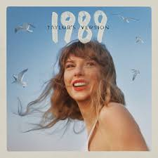

A lo largo de su carrera, Taylor Swift ha lanzado numerosos álbumes que muestran su evolución musical, personal y artística. Cada disco refleja distintas etapas de su vida y sus emociones, convirtiéndose en un testimonio de su talento y creatividad.
Su primer álbum presentó a Taylor al mundo con un estilo country-pop, lleno de canciones sobre amor adolescente y sueños de juventud. Temas como “Tim McGraw”, “Teardrops on My Guitar” y “Our Song” la ayudaron a conectar con el público joven y construir sus primeros fans.
Este álbum consolidó su fama, con éxitos como “Love Story” y “You Belong With Me”. Refleja el amor adolescente y la inocencia de la juventud, siendo un punto clave en su carrera temprana.

Con “Red”, Taylor exploró nuevos géneros combinando country y pop, mostrando una etapa más madura y compleja. Canciones como “All Too Well” se volvieron icónicas y reflejan emociones profundas de amor y pérdida.
Marcó su transición definitiva al pop, con éxitos como “Shake It Off” y “Blank Space”. Este álbum consolidó su estatus como superestrella global.
Con “Reputation”, Taylor mostró un lado más audaz y empoderado, enfrentando críticas y medios con firmeza, y consolidando su imagen de artista fuerte e independiente.
Este álbum refleja una etapa introspectiva y creativa, con canciones más tranquilas, narrativas profundas y un estilo indie-folk que destacó su madurez artística.